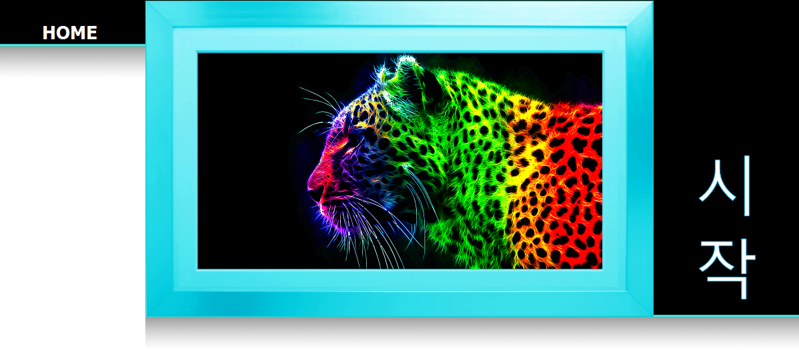
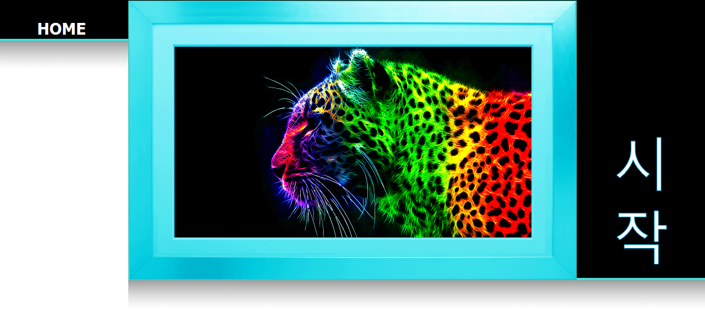
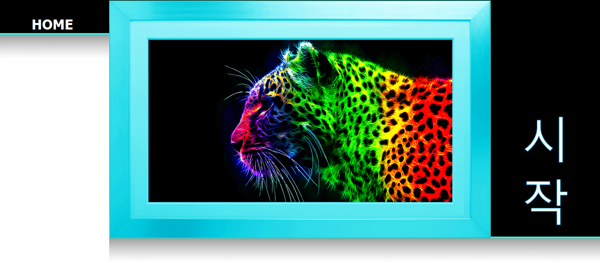
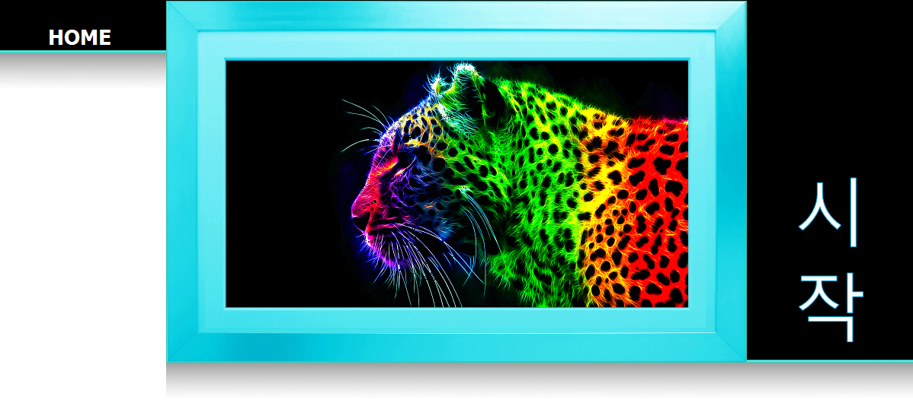

Hello and welcome to my website, If you are looking for my Resume please proceed to the bottom of this page. My name is Keith Michael Mulqueen and I am a Video Games Developer, a Programmer and an Artist from Limerick, Ireland. As a Video Games Developer, I believe the most important trait any video game can have is Innovation and Creativity. I see video games design as being the most gathered form of Art available right now, where to create a true video gaming masterpiece, we must seek to unite multiple masterpieces from different fields into one executable. What is art? Is it beautiful paintings and imagery? beautiful music and audio? or designing beauty in structure and design? Art is all of these. Art is Video Gaming.
From a young age, I have always considered myself an Artist. Creative thinking and creative design is something that comes naturally to me, and I believe its a driving motivator for me to continually learn and improve my skills. Here is a list of some of my strongest areas of Expertise:
| SKILLS & ABILITIES | Computer Game Development and Design, Programming Languages, 2D Pixel Art, Drawing and Animation, Human Computer Interaction, Website Development and Creation, Narrative illustration and Creative Writing, Creative Concept Design, Story Writing, Marketing and Business Skills. |
I have recently graduated from the University of Limericks Computer Games Development course with a QCA of 2.56. As with my university, all graduates of this course are acknowledged as having a 5 star employment rating, and this is testament to the hard work and dedication needed to advance through the 4 year course. Complementary to the completion of my degree, I have also taken two modules in Marketing and one module in Psychology to better prepare myself for the workplace.
The programming languages which I am most comfortable with are C++ and Java, However, I also have worked on a number of projects in my University which required a good understanding and knowledge of a number of other Languages and Tools:
| PROGRAMMING LANGUAGES | C++, Java, C, C#, HTML, CSS, Lua, Python, PHP, Game Maker Language |
| PROGRAMMING TOOLS | Visual Studio C++, Eclipse, Visual Studio C#, GitHub, Adobe Dreamweaver, Netbeans, Adobe Photoshop, MAC Gedit, Linux Terminal, MS DOS Command Line, Adobe Illustrator, MS Office, MS Paint, Blender, Audacity, Fruity Loops Studio, Flex & Bison, LEX & YACC, BlueJ, Android Studio |
I have practised these skills, improved on these languages and produced many works of art from these tools over the course of my time in University. However, learning new things is something that really excites me, which allows me to continually improve and learn new skills. Learning to adapt to new challenges, new environments and new people is something that anyone can struggle with, but with the skills and qualities that I possess, I believe that I make light work of it. In University, I have been able to work closely with people and prepare myself for the working world beyond University. Below is a list of some of the modules that I have passed over this time:
| PROGRAMMING MODULES | Computer Graphics (CS4815) Object Oriented Development (CS4013) Computer Games Programming - Tools and Techniques (CS4075) Introduction to Systems Analysis (CS4513) Software Testing and Inspection (CS4004) Intelligent Systems (CS4006) Data Structures and Algorithms (CS4115) Systems Analysis and Design (CS4512) Computer Networks (EE4013) Game Modelling Design (CS4043) Statistics for Computing (MA4413) Representation and Modelling (CS4012) Computer Science 1 (CS4111) Computer Science 2 (CS4112) Computer Organisation 1 (CS4211) Computer Organisation 2 (CS4212) Imperative Programming 1 (CS4411) Imperative Programming 2 (CS4512) Discrete Mathematics 1 (MA4111) Computer Mathematics 2 (MA4402) Computer Applications (CS4011) Multimedia Industry Perspective (CS4047) Data Mining and Data Warehousing (CS4055) Programming Language Technology (CS4158) Distributed Systems (EE4024) Project Management in Practise (CS4457) Writing Games Analysis (CS4067) Software Design and Architecture (CS4227) Computer Graphics 1 (CS4815) Computer Graphics 2 (CS4085) Event Driven Programming (CS4076) Machine Learning and AI for Games (CS4057) Human Computer Interaction (CS4826) Software Quality (CS4157) |
| OTHER MODULES | How Young People Learn (EN4012) Marketing (MK4002) Marketing Management (MK4006) |
Again, I would like to thank you for taking the time to view my website and I hope that you enjoy browsing through the projects I have completed and been working on.
Still not convinced? Well if you have time, please check out my LinkedIn profile here and feel free to download and view my Resume below.